Afghan cities are full of unique cultural stories, traditions, and flavors.
Explore them here!
Mazar-i-sharif
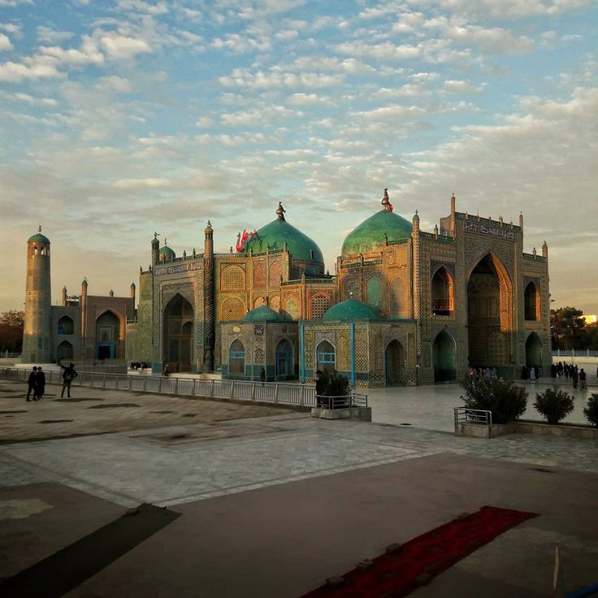
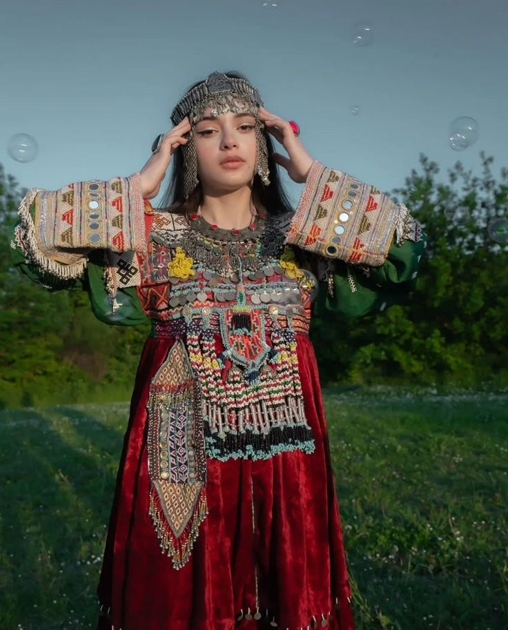
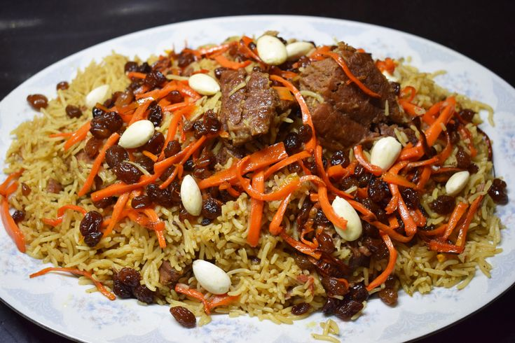

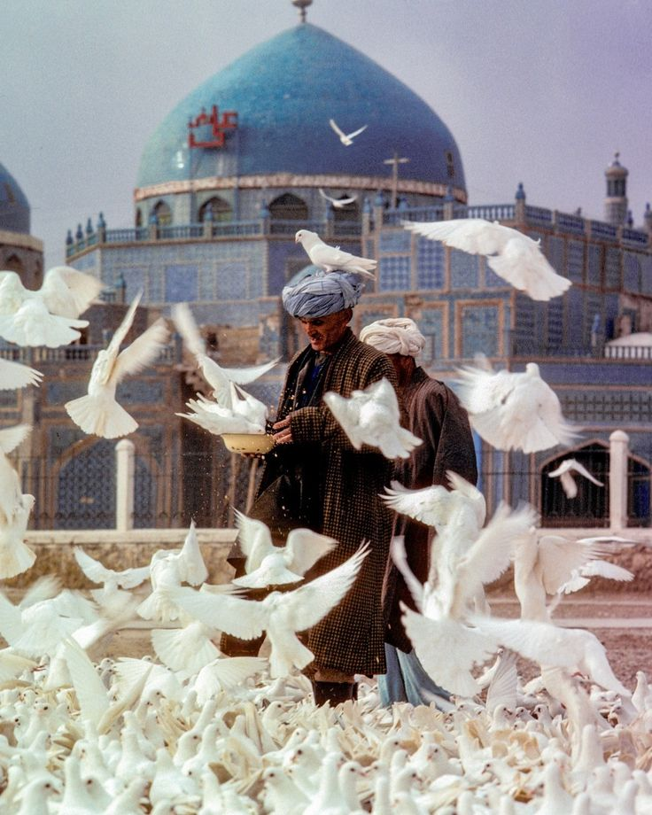
Mazar-i-Sharif is a major city in northern Afghanistan and the capital of Balkh Province. It is famous for the Blue Mosque, an important religious site attracting pilgrims from across Central Asia.
The city is ethnically diverse, with Tajiks, Uzbeks, Hazaras, and Pashtuns living together.
The culture reflects this blend, with traditional music, dance, and festivals such as Nowruz (Persian New Year) widely celebrated. Typical foods include kabuli pulao (a rice dish with meat and raisins), mantoo (steamed dumplings), and fresh bread.
Men often wear perahan tunban (a traditional long shirt and trousers), while women wear colorful dresses with embroidered scarves and jewelry.
Herat
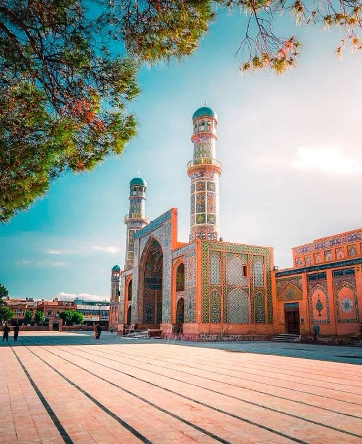

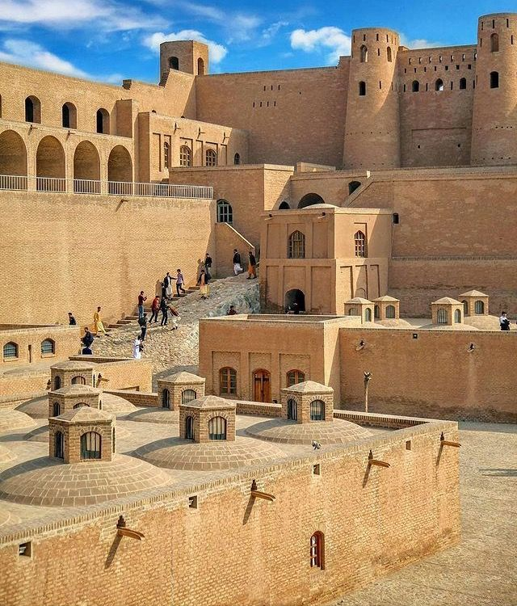
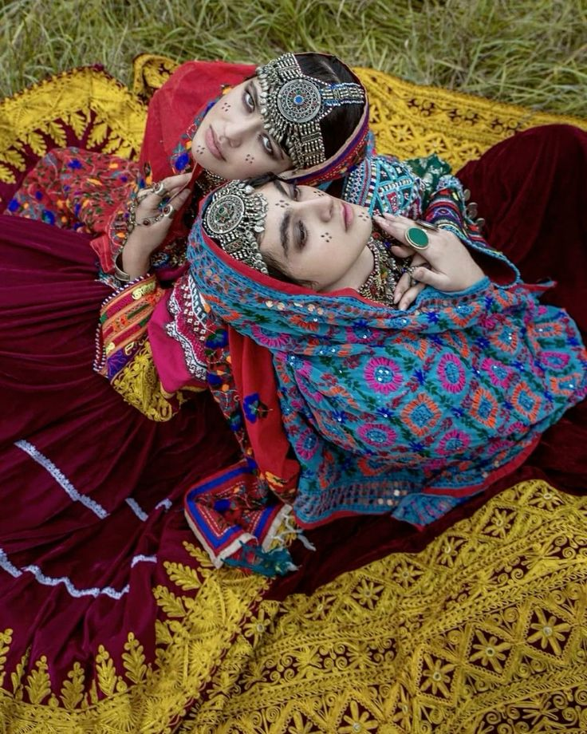

Herat, located in western Afghanistan near Iran and Turkmenistan, has a rich Persian cultural heritage. It is famous for its art, poetry, and historic architecture like the Herat Citadel.
The people are mainly Tajiks and speak Dari (a Persian dialect).
Herati culture includes beautiful traditional music and storytelling.
Popular foods include shorwa (a meat and vegetable soup),
bolani (stuffed flatbread), and fresh fruits like pomegranates and melons.
Traditional dress includes elegant embroidered dresses for women, often paired with silk scarves, while men wear shalwar kameez and sometimes a felt hat called a karakul.
Kandahar
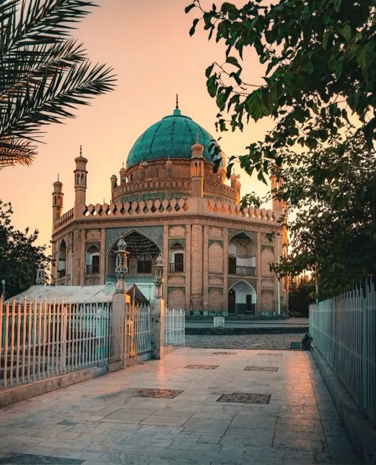
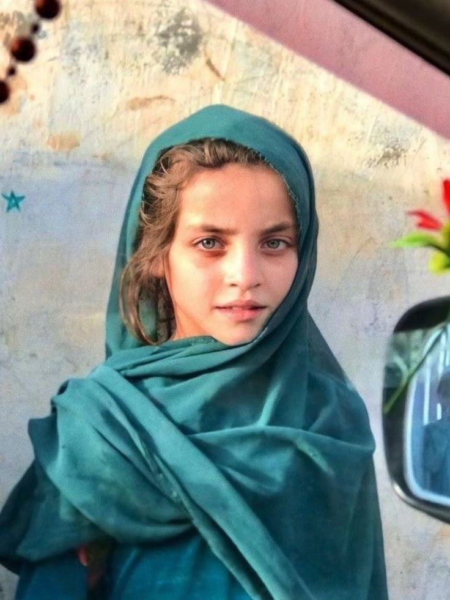
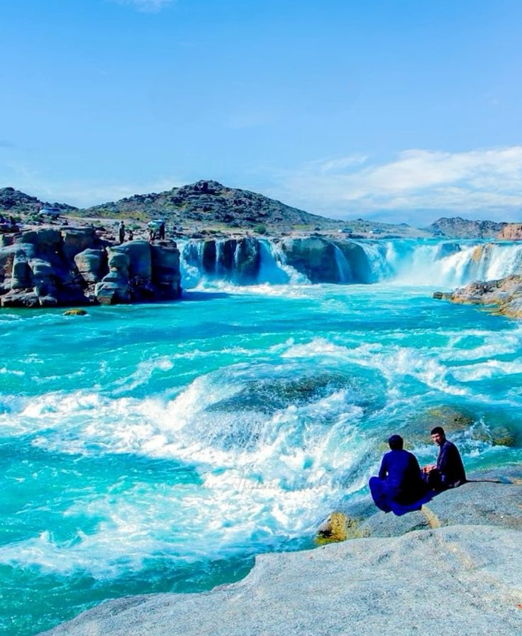
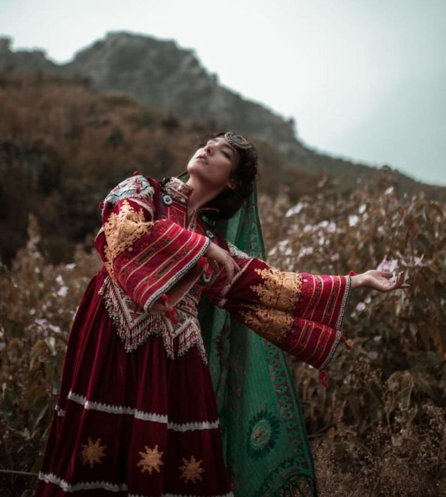
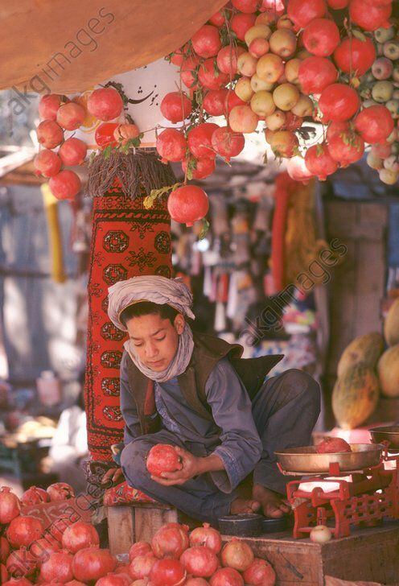
Kandahar is a major city in southern Afghanistan and the capital of Kandahar Province. It is historically significant as the birthplace of modern Afghanistan and the cultural center of the Pashtun people. The city is known for its strong tribal traditions and Pashtunwali code of honor.
The people of Kandahar mainly speak Pashto and have rich traditions in music, poetry, and storytelling.
Kandahari cuisine is famous for Kandahari pulao (rice with lamb, carrots, and raisins), mantu (dumplings), and naan bread.
Traditional dress for men includes the shalwar kameez with turbans or wool caps, while women wear colorful embroidered dresses with headscarves,
often more conservative in style
Kunar
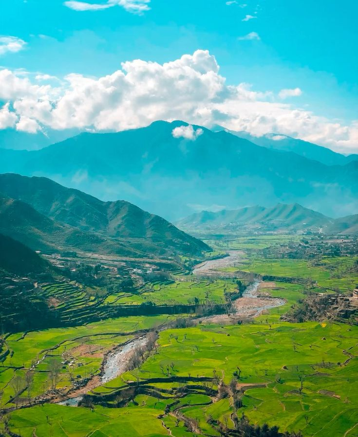
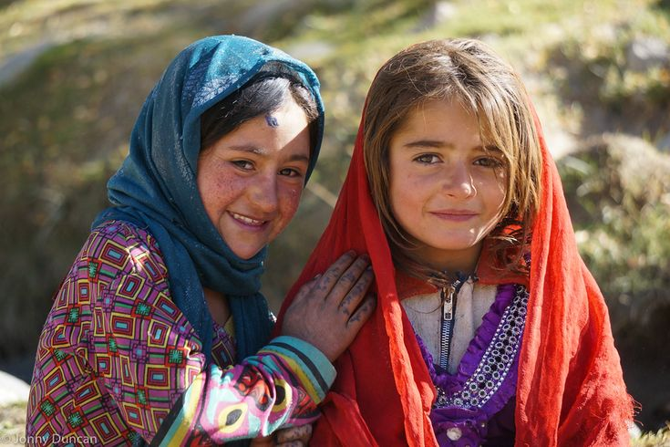
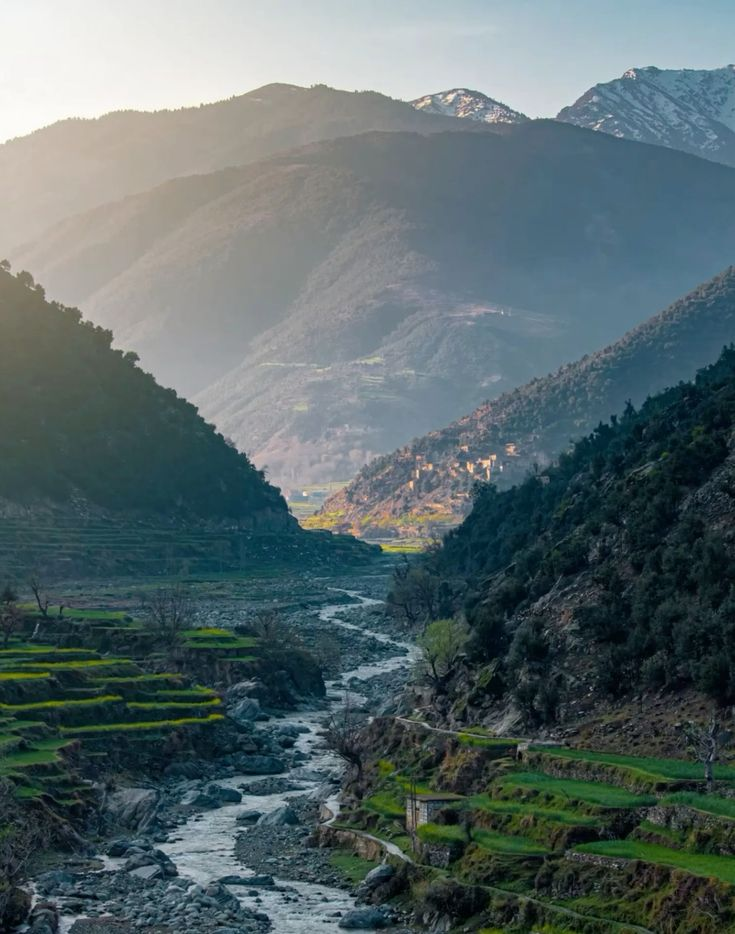
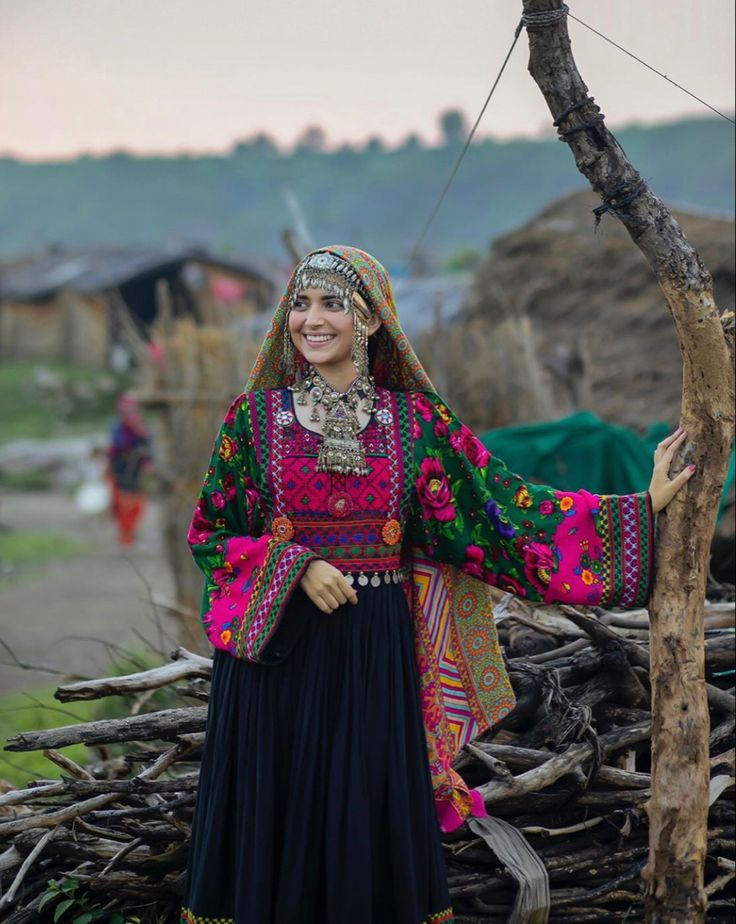
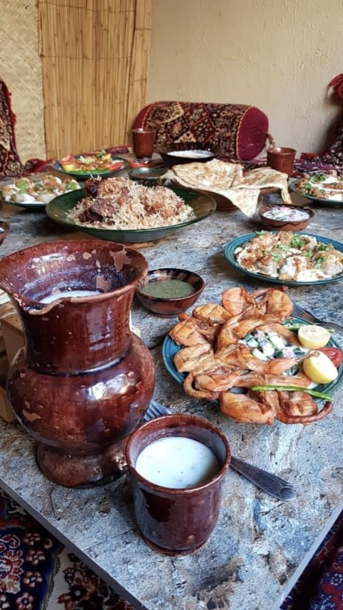
Kunar province, in eastern Afghanistan along the border with Pakistan, is mountainous and home mainly to Pashtun tribes.
The people are known for their strong tribal traditions and hospitality.
Traditional Pashtun culture is reflected in their language, poetry, and music.
Food here often includes rice with lamb or chicken, flatbreads, and hearty stews made with local herbs.
Men commonly wear shalwar kameez with turbans or pakols (wool caps), while women wear long embroidered dresses and headscarves, often with bright color